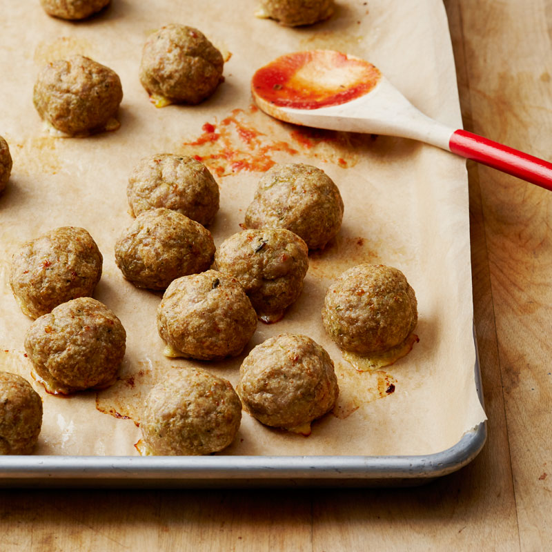

Turkey Pesto Meatballs

These four-ingredient meatballs are genius. By adding reduced-fat pesto sauce to the ground turkey meat, you streamline the meatball prep. With one easy ingredient, you get basil, garlic, cheese, and oil. And in addition to great flavor, the pesto makes the meatballs wonderfully juicy, too. All that's left to add is breadcrumbs, egg whites, and a little salt. The meatballs roll up easily, and brown in the oven in just 20 minutes. If you want to serve them with sauce, put a pot of marinara on the stovetop to simmer while the meatballs are cooking. After they come out of the oven, lower them into the sauce and let the flavors simmer together for a few minutes before serving. You can serve these with spaghetti, or even spaghetti squash.
Ingredients
Serves 6 people
- 2 spray(s) cooking spray
- 1¼ pound(s) uncooked 93% lean ground turkey
- ½ cup(s) whole wheat breadcrumbs/li>
- 3 egg white(s)
- ⅓ cup(s) reduced-fat pesto sauce
- ½ tsp table salt
Preparation
- Preheat oven to 350°F. Line a rimmed baking sheet with parchment paper.
- In a large bowl, gently combine all ingredients—do not overmix or meatballs will be tough. Roll into 24 meatballs (1 1/4-in each); place on prepared pan.
- Bake until lightly browned and cooked through, 20 minutes.
- Serving size: 4 meatballs